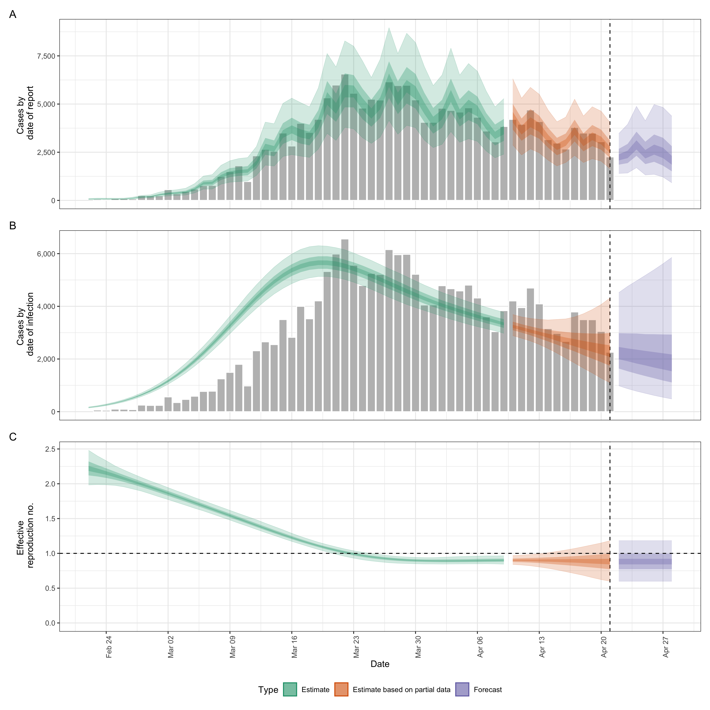
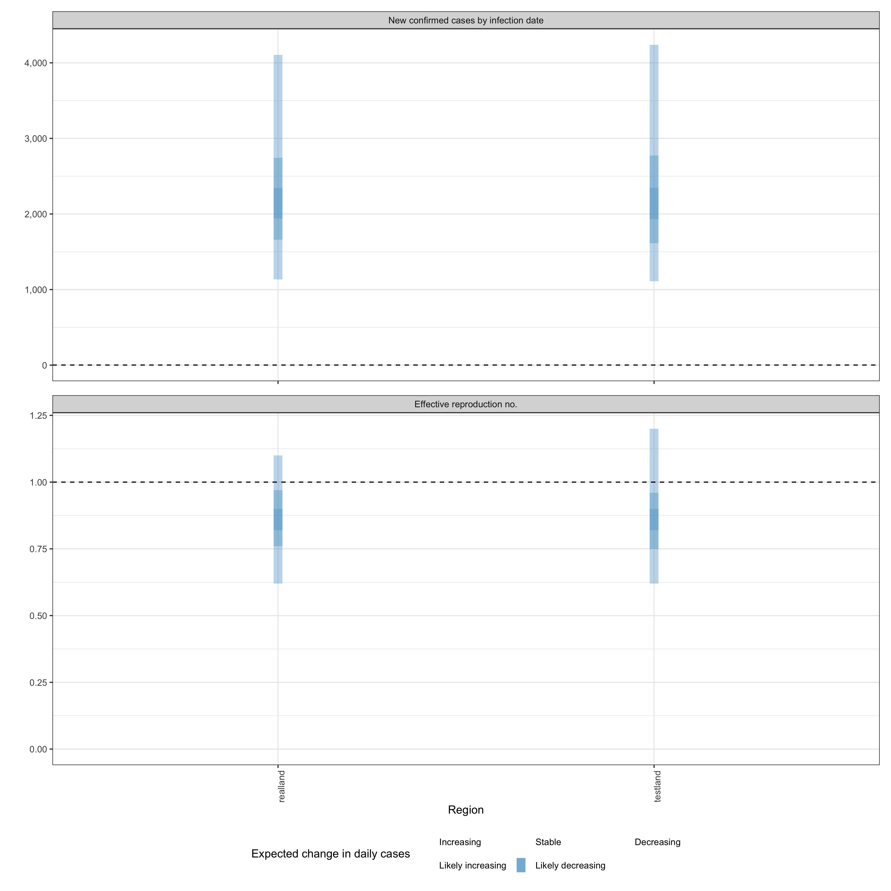

Quick start
In the following section we give an overview of the simple use case
for epinow() and regional_epinow().
The first step to using the package is to load it as follows.
Reporting delays, incubation period and generation time
Distributions can be supplied in two ways. First, one can supplying
delay data to estimate_delay(), where a subsampled
bootstrapped lognormal will be fit to account for uncertainty in the
observed data without being biased by changes in incidence (see
?EpiNow2::estimate_delay()).
Second, one can specify predetermined delays with uncertainty using
the distribution functions such as Gamma or
Lognormal. An arbitrary number of delay distributions are
supported in dist_spec() with a common use case being an
incubation period followed by a reporting delay. For more information on
specifying distributions see (see
?EpiNow2::Distributions).
For example if data on the delay between onset and infection was
available we could fit a distribution to it, using
estimate_delay(), with appropriate uncertainty as follows
(note this is a synthetic example),
reporting_delay <- estimate_delay(
rlnorm(1000, log(2), 1),
max_value = 14, bootstraps = 1
)If data was not available we could instead specify an informed
estimate of the likely delay using the distribution functions
Gamma or LogNormal. To demonstrate, we choose
a lognormal distribution with mean 2, standard deviation 1 and a maximum
of 10. This is just an example and unlikely to apply in any
particular use case.
reporting_delay <- LogNormal(mean = 2, sd = 1, max = 10)
reporting_delay## - lognormal distribution (max: 10):
## meanlog:
## 0.58
## sdlog:
## 0.47For the rest of this vignette, we will use inbuilt example literature estimates for the incubation period and generation time of Covid-19 (see here for the code that generates these estimates). These distributions are unlikely to be applicable for your use case. We strongly recommend investigating what might be the best distributions to use in any given use case.
example_generation_time## - gamma distribution (max: 14):
## shape:
## - normal distribution:
## mean:
## 1.4
## sd:
## 0.48
## rate:
## - normal distribution:
## mean:
## 0.38
## sd:
## 0.25
example_incubation_period## - lognormal distribution (max: 14):
## meanlog:
## - normal distribution:
## mean:
## 1.6
## sd:
## 0.064
## sdlog:
## - normal distribution:
## mean:
## 0.42
## sd:
## 0.069Now, to the functions.
epinow()
This function represents the core functionality of the package and includes results reporting, plotting, and optional saving. It requires a data frame of cases by date of report and the distributions defined above.
Load example case data from EpiNow2.
reported_cases <- example_confirmed[1:60]
head(reported_cases)## date confirm
## <Date> <num>
## 1: 2020-02-22 14
## 2: 2020-02-23 62
## 3: 2020-02-24 53
## 4: 2020-02-25 97
## 5: 2020-02-26 93
## 6: 2020-02-27 78Estimate cases by date of infection, the time-varying reproduction
number, the rate of growth, and forecast these estimates into the future
by 7 days. Summarise the posterior and return a summary table and plots
for reporting purposes. If a target_folder is supplied
results can be internally saved (with the option to also turn off
explicit returning of results). Here we use the default model
parameterisation that prioritises real-time performance over run-time or
other considerations. For other formulations see the documentation for
estimate_infections().
estimates <- epinow(
reported_cases = reported_cases,
generation_time = generation_time_opts(example_generation_time),
delays = delay_opts(example_incubation_period + reporting_delay),
rt = rt_opts(prior = list(mean = 2, sd = 0.2)),
stan = stan_opts(cores = 4, control = list(adapt_delta = 0.99)),
verbose = interactive()
)## DEBUG [2024-03-06 10:56:48] epinow: Running in exact mode for 2000 samples (across 4 chains each with a warm up of 250 iterations each) and 81 time steps of which 7 are a forecast
names(estimates)## [1] "estimates" "estimated_reported_cases"
## [3] "summary" "plots"
## [5] "timing"Both summary measures and posterior samples are returned for all
parameters in an easily explored format which can be accessed using
summary. The default is to return a summary table of
estimates for key parameters at the latest date partially supported by
data.
| measure | estimate |
|---|---|
| New confirmed cases by infection date | 2275 (1119 – 4289) |
| Expected change in daily cases | Likely decreasing |
| Effective reproduction no. | 0.88 (0.59 – 1.2) |
| Rate of growth | -0.026 (-0.1 – 0.034) |
| Doubling/halving time (days) | -26 (20 – -6.8) |
Summarised parameter estimates can also easily be returned, either filtered for a single parameter or for all parameters.
## date variable strat type median mean sd lower_90
## <Date> <char> <char> <char> <num> <num> <num> <num>
## 1: 2020-02-22 R <NA> estimate 2.235313 2.242778 0.15785751 1.994122
## 2: 2020-02-23 R <NA> estimate 2.204258 2.206780 0.13441775 1.994963
## 3: 2020-02-24 R <NA> estimate 2.165179 2.168790 0.11730902 1.983866
## 4: 2020-02-25 R <NA> estimate 2.123195 2.128927 0.10599589 1.958182
## 5: 2020-02-26 R <NA> estimate 2.081865 2.087395 0.09931082 1.931449
## 6: 2020-02-27 R <NA> estimate 2.038602 2.044461 0.09574420 1.896977
## lower_50 lower_20 upper_20 upper_50 upper_90
## <num> <num> <num> <num> <num>
## 1: 2.133553 2.196041 2.273706 2.343048 2.510622
## 2: 2.117524 2.168279 2.232611 2.295411 2.431460
## 3: 2.092001 2.134802 2.192621 2.247227 2.364333
## 4: 2.057449 2.099115 2.151714 2.200477 2.308683
## 5: 2.018154 2.055255 2.107715 2.153086 2.256241
## 6: 1.978879 2.014504 2.063162 2.107575 2.208615Reported cases are returned in a separate data frame in order to streamline the reporting of forecasts and for model evaluation.
## date type median mean sd lower_90 lower_50 lower_20
## <Date> <char> <num> <num> <num> <num> <num> <num>
## 1: 2020-02-22 gp_rt 69 70.3425 18.36240 43.95 58 64.0
## 2: 2020-02-23 gp_rt 77 79.1820 20.80436 48.00 64 73.0
## 3: 2020-02-24 gp_rt 76 77.5690 20.52722 48.00 63 71.0
## 4: 2020-02-25 gp_rt 73 74.9525 19.90978 46.95 61 68.0
## 5: 2020-02-26 gp_rt 77 79.1355 20.81427 50.00 64 72.0
## 6: 2020-02-27 gp_rt 111 112.9385 28.65963 70.00 93 103.6
## upper_20 upper_50 upper_90
## <num> <num> <num>
## 1: 73 81 102.00
## 2: 83 92 116.00
## 3: 81 90 113.05
## 4: 78 87 110.00
## 5: 82 92 116.00
## 6: 118 130 165.00A range of plots are returned (with the single summary plot shown
below). These plots can also be generated using the following
plot method.
plot(estimates)
regional_epinow()
The regional_epinow() function runs the
epinow() function across multiple regions in an efficient
manner.
Define cases in multiple regions delineated by the region variable.
reported_cases <- data.table::rbindlist(list(
data.table::copy(reported_cases)[, region := "testland"],
reported_cases[, region := "realland"]
))
head(reported_cases)## date confirm region
## <Date> <num> <char>
## 1: 2020-02-22 14 testland
## 2: 2020-02-23 62 testland
## 3: 2020-02-24 53 testland
## 4: 2020-02-25 97 testland
## 5: 2020-02-26 93 testland
## 6: 2020-02-27 78 testlandCalling regional_epinow() runs the epinow()
on each region in turn (or in parallel depending on the settings used).
Here we switch to using a weekly random walk rather than the full
Gaussian process model giving us piecewise constant estimates by
week.
estimates <- regional_epinow(
reported_cases = reported_cases,
generation_time = generation_time_opts(example_generation_time),
delays = delay_opts(example_incubation_period + reporting_delay),
rt = rt_opts(prior = list(mean = 2, sd = 0.2), rw = 7),
gp = NULL,
stan = stan_opts(cores = 4, warmup = 250, samples = 1000)
)## INFO [2024-03-06 10:57:48] Producing following optional outputs: regions, summary, samples, plots, latest
## INFO [2024-03-06 10:57:48] Reporting estimates using data up to: 2020-04-21
## INFO [2024-03-06 10:57:48] No target directory specified so returning output
## INFO [2024-03-06 10:57:48] Producing estimates for: testland, realland
## INFO [2024-03-06 10:57:48] Regions excluded: none
## DEBUG [2024-03-06 10:57:48] testland: Running in exact mode for 1000 samples (across 4 chains each with a warm up of 250 iterations each) and 81 time steps of which 7 are a forecast
## WARN [2024-03-06 10:57:59] testland (chain: 1): Bulk Effective Samples Size (ESS) is too low, indicating posterior means and medians may be unreliable.
## Running the chains for more iterations may help. See
## https://mc-stan.org/misc/warnings.html#bulk-ess -
## WARN [2024-03-06 10:58:00] testland (chain: 1): Tail Effective Samples Size (ESS) is too low, indicating posterior variances and tail quantiles may be unreliable.
## Running the chains for more iterations may help. See
## https://mc-stan.org/misc/warnings.html#tail-ess -
## INFO [2024-03-06 10:58:00] Completed estimates for: testland
## DEBUG [2024-03-06 10:58:00] realland: Running in exact mode for 1000 samples (across 4 chains each with a warm up of 250 iterations each) and 81 time steps of which 7 are a forecast
## WARN [2024-03-06 10:58:10] realland (chain: 1): Bulk Effective Samples Size (ESS) is too low, indicating posterior means and medians may be unreliable.
## Running the chains for more iterations may help. See
## https://mc-stan.org/misc/warnings.html#bulk-ess -
## INFO [2024-03-06 10:58:11] Completed estimates for: realland
## INFO [2024-03-06 10:58:11] Completed regional estimates
## INFO [2024-03-06 10:58:11] Regions with estimates: 2
## INFO [2024-03-06 10:58:11] Regions with runtime errors: 0
## INFO [2024-03-06 10:58:11] Producing summary
## INFO [2024-03-06 10:58:11] No summary directory specified so returning summary output
## INFO [2024-03-06 10:58:11] No target directory specified so returning timingsResults from each region are stored in a regional list
with across region summary measures and plots stored in a
summary list. All results can be set to be internally saved
by setting the target_folder and summary_dir
arguments. Each region can be estimated in parallel using the
future package (when in most scenarios cores
should be set to 1). For routine use each MCMC chain can also be run in
parallel (with future = TRUE) with a time out
(max_execution_time) allowing for partial results to be
returned if a subset of chains is running longer than expected. See the
documentation for the future package for details on
nested futures.
Summary measures that are returned include a table formatted for reporting (along with raw results for further processing). Futures updated will extend the S3 methods used above to smooth access to this output.
knitr::kable(estimates$summary$summarised_results$table)| Region | New confirmed cases by infection date | Expected change in daily cases | Effective reproduction no. | Rate of growth | Doubling/halving time (days) |
|---|---|---|---|---|---|
| realland | 2160 (1134 – 4105) | Likely decreasing | 0.86 (0.62 – 1.1) | -0.032 (-0.093 – 0.03) | -22 (23 – -7.5) |
| testland | 2137 (1110 – 4238) | Likely decreasing | 0.86 (0.62 – 1.2) | -0.032 (-0.097 – 0.032) | -22 (22 – -7.2) |
A range of plots are again returned (with the single summary plot shown below).
estimates$summary$summary_plot